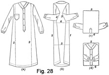
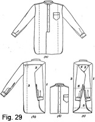

1931 - Laundering and Dry Cleaning
Woman's Institute of Domestic Arts & Sciences,
by Mary Brooks Picken
The Laundering Process
PROGRAM FOR LAUNDRY WORK
69. Laundry work may be done in a haphazard way and perchance turn out satisfactorily, but such a result must be considered more nearly a coincidence than a direct result. It cannot be relied on to happen every wash-day. Instead, it is the systematically done laundry work that can guarantee success. But this does not mean that superfluous time must be consumed in elaborate processes. The methods may be thorough and systematic and yet direct and expeditious.
70. Following is a program that has proved its worth as a guide through the various steps of laundry work. It is given first in outline form, and then in detail.
Monday:
- Sort clothes.
- Mend tears that will grow in washing.
- Remove stains.
- Soak soiled clothes.
- Get equipment ready.
Tuesday:
- Heat water.
- Make soap solution.
- Fill tub or washer and wash in succession (changing suds
when necessary):
- Table linen
- Bed linen
- Towels
- Body linen
- Handkerchiefs
- Soaked clothes
- Boil by putting clothes in cold water and letting them slowly come to boiling point.
- Make starch.
- Look over articles, especially if a washer has been used, to see whether further rubbing is necessary.
- Rinse in 2 or 3 waters.
- Blue, dipping and wringing each piece separately.
- Starch clothes needing average stiffness, changing starch as often as necessary.
- Hang out pieces.
- Wash colored clothes, setting color, washing, rinsing 2 or 3 times, starching; and hang out to dry.
- Wash cotton stockings, rinse, and hang to dry.
- Take down clothes, piece by piece, fold and lay in the basket.
- Dampen and roll up.
- Wash any silk underwear, embroidery pieces, or colored clothes that must be ironed immediately, and iron. Also, wash flannels and wool or silk stockings.
Wednesday:
- Do heavy starching.
- Step No. 15, under Tuesday, may be left until now, if desired.
- Iron.
- Air.
- Put away.
SORTING THE CLOTHES
71. In laundering, it is necessary first to sort the clothes, as different handling is required for white and colored garments and for cotton, linen, wool, and silk. A good classification to use in sorting is as follows: Table linen, kitchen linen, bed linen, body linen, colored clothes, flannels, silks, and hosiery.
72. At the very first, the articles to be washed should be examined carefully, so that fancy buttons or, in fact, any trimming that would be harmed by water may be removed. Stitches holding drapery or linings should be loosened to simplify cleansing and ironing. Also, during the sorting of clothes, attention should be given to garments containing pockets. Turn the pockets inside out and brush thoroughly to remove any particles of dust that may have collected.
73. The white pieces of cotton or linen may be laundered with ordinary precautions, but silk and wool garments and colored clothes require particular attention. A difference in handling is necessary because cotton and linen are made of vegetable fibers whereas silk and wool are composed of animal fibers, and animal fibers are more susceptible to injury from strong soaps and hot water than are vegetable fibers.
While the clothes are being sorted, look them over carefully for stains and spots, and see that these are removed before the garments are washed, as removing stains at this time saves an extra handling and prevents the stain from being transferred to other garments. The subject of stain removing, or "spotting," is treated in the Section on Dry Cleaning.
WASHING WHITE COTTONS AND LINENS
74. Soaking.—It is advisable to soak white clothes for a few hours (some prefer over night), for soaking loosens the dirt, makes less rubbing necessary, and therefore saves both time and wear. A very simple way to soak white clothes is to cover them with warm water early in the morning. Then, when one is ready to go on with the washing, more hot water may be added to that already used and the clothes may be washed easily.
If clothes are to be soaked over night, use cold water rather than warm, because warm water expands the fibers of the fabric, brings the dirt to the surface, and then, during the night, cools and closes the fibers so that by morning the dirt is held very tightly in the fabric and is difficult to loosen again.
When clothes are soaked over night, soap the very soiled parts as they are put into the tub. Some persons roll the soaped articles, this plan being very satisfactory although it takes more time.
If you have only hard water to use, treat it by one of the methods suggested in Arts. 66, 67, and 68 before you attempt to soak clothes in it. Otherwise, a scum will form and settle on the clothes. Soap, of course, helps to prevent the forming of the scum.
75. Washing.—After soaking the clothes, put them into a tub half full of hot, soapy water and rub them on a washboard, or, if you have a washing machine, put them in that. In either case, when the soap has been "killed" by a quantity of clothes passing through the suds and the water is cold, change to warm, fresh suds. No suds and cold water make lifeless, heavy laundry; therefore, rejuvenate by new, hot suds. The results repay many times for the effort.
If a washboard is used, do not rub too vigorously, as this may injure the fabric. The idea is to force the suds through the clothes and thus carry the dirt away. Consequently, the portions being rubbed should be dipped almost constantly in the suds, so that there will be no rubbing of the material after the water has been squeezed out. For very coarse goods, a hand brush will prove helpful. Another point to remember is that the soiled parts of the clothes should be rubbed on one side and then turned and rubbed on the other side. Rubbing with the palm of the hand will save the skin on the knuckles.
76. If a washing machine is used, the book of directions that pertain to that particular washer should be carefully studied. Nearly every machine has a water line marked on it to indicate the maximum amount of water permissible. The number of garments may be such that, when pressed down, they will be an inch below this water level. Never fill a washer too full, not only because the mechanism will be injured, but also because the free movement of the clothes will be hindered.
77. The amount of soap must be determined by the hardness of the water, and can be gauged almost exactly by each housewife. By weighing the clothes each wash-day and trying out different amounts of soap, she can determine how much is necessary to make suds that will "hold" up during the washing and yet not be so heavy as to adhere to the fibers of the materials and make the removing of the dirt more difficult. Of course, the soap should be liquid to obtain the best results, either the soap chips or the soap jelly discussed in Art. 52 being satisfactory.
78. Boiling.—If white cotton or linen clothes are very much soiled or if it seems desirable to sterilize them, they may be boiled. After first washing in hot water, therefore, wring the clothes, rub the soiled spots carefully with white soap, and place in a boiler containing cold water. Put a few soap chips or a little soap jelly into each boiler full of clothes, and heat the water gradually. Use a clothes-stick to keep the clothes stirred and pressed down. After the water has begun to boil, allow the clothes to remain in it about five minutes. Boiling for a longer time tends to turn fabrics yellow.
If the garments are very soiled, from 1 to 4 tablespoonfuls of kerosene may be put into the water when boiling to aid in cleansing. Thorough rinsing is required in such case to remove all traces of the kerosene.
Another helpful fact to know is that the carefully strained juice of one or two lemons added to a boiler of clothes will help to whiten them.
79. Rinsing.—After taking clothes from soapy water, very careful rinsing is essential. It is advisable to rinse in clear hot water, but this is not always practical, as usually lukewarm water is more easily provided. In either case, shake out each piece carefully to remove all soap. Repeat the rinsing process at least twice, and preferably three times, because the removal of the soapy water has much to do with the efficiency of cleansing and the freshness of the clothes when dry. An ideal way is to have the first rinse water hot and the successive rinse waters gradually grow colder so as to prepare the clothes for the bluing. All soap must be removed by these rinsings; otherwise the clothes will be spotted when the bluing comes in contact with the alkali of the soap.
Do not use washing soda to soften the rinse water, as it is too strong to be left in the fabric. A little borax may be used in the first and second rinse waters; but, after the soap has been removed, there is no need for a water softener, for it is only in the presence of soap that a scum is formed.
80. Bluing.—Since the bluing process is resorted to for the purpose of covering up yellowness, it is not necessary for new clothes. But bluing white clothes that are no longer new is an important item of good laundering. Just how much bluing is required must be determined by each housewife as she takes into account the kind of bluing and the nature of the articles to be blued. For example, open-mesh fabrics and table linens take up bluing more quickly than do materials of a firmer weave.
At all times, great care must be taken not to have the blue water too dark or to leave the articles in it too long, for too much bluing acts as a handicap, making the clothes gray rather than white. If it does happen that clothes become overblued, they may be whitened by placing them in cold water and heating them to the boiling point, repeating the process if necessary until all excess bluing is removed.
81. If you are one of the housewives who use powdered or lump blue, then be sure to take great care to add a small amount of water to the powdered blue before use and to tie ball, or lump, blue in small cloth bags, which may be dipped and squeezed in the water before using. Otherwise, the blue is likely to be unevenly distributed and cause spots to form on the clothes. In spite of these precautions, there will be this tendency unless a very few clothes are put in at one time and these kept in motion.
If you use the liquid Prussian blue, remember that it contains salts of iron that turn to iron-rust in the presence of the alkali from soap, particularly when heat is applied, as in ironing, for example. Consequently, to avoid iron-rust stains on the material, take every care to have the clothes thoroughly rinsed so that all traces of soap are removed before bluing.
82. No matter what kind of bluing is used, the following cautions should be observed:
Use a small amount of bluing in a large amount of water.
Keep it stirred well.
Shake the clothes thoroughly before they are put into it.
Do not allow clothes to remain in the water too long; unless clothes are very yellow, sousing them up and down two or three times should give them enough bluing.
A helpful point to know about the use of bluing is that 1/4 to 1/2 cupful of skimmed milk added to the bluing water helps to prevent the bluing from streaking clothes.
83. Starching.—Starching clothes means dipping them in a stiffening agent to give them body and a dressing similar to that in new material, and also to aid in keeping them clean. When it is desirable, this is done after rinsing and bluing. The stiffer you want the article, the more thoroughly you must wring the rinse or bluing water from it, and the less thoroughly you must wring the stiffening agent from it.
The stiffening agent to use and the amount needed vary according to the kind of fabric and the stiffness desired. Also, the number of pieces to be put through the starch must be considered.
Of the kinds of stiffening available, discussion has been given in Arts. 60 and 61. In order to become efficacious, these stiffening agents require preparation according to stated formulas or recipes, making a further division, that of the cooked and uncooked varieties, necessary.
84. For general laundry purposes, cooked starch is the customary standby. Following is a general recipe for cooked starch, which may be varied to suit one's needs.
- 1 to 4 tablespoonfuls starch
- 1 quart boiling water
- 1 cupful cold water
- 1/4 teaspoonful paraffin or lard
Blend the starch and cold water to a smooth paste, and then gradually pour in the boiling water. Add the paraffin or lard next. Boil the mixture until clear, stirring constantly, generally for 5 to 10 minutes. Strain while hot. If 1/2 teaspoonful of borax is added with the paraffin or lard, it will help to whiten the clothes and also make the starch smoother.
For a stiff dressing, the starch should be made very heavy; that is, more starch should be used in the mixture. When cooled enough to handle, such starch should be like a very soft jelly.
85. Uncooked or cold starch also has its place in laundry work, although, because of the difficulty in ironing garments starched in this way, it is wiser to use a stiff cooked dressing, which produces practically the same results.
There are various brands of commercial starch to use for cold starching. Such starches are simply blended with cold water and are generally used for collar bands and cuffs, or wherever a firm, stiff finish is desired.
86. Borax dressing is used to stiffen laces, fine voiles, or organdies. A solution of borax made with 1 teaspoonful of borax to 1 quart of hot water is very satisfactory.
Garments stiffened by borax must be ironed before they have dried, as the dressing is not heavy enough to warrant the dilution caused by sprinkling.
87. Gum arabic makes a good stiffening agent for crisp lawns and organdies, particularly in dark colors. It may be purchased in powdered or lump form, but if possible the powder should be procured. Let 1 or 1 1/2 tablespoonfuls stand in a quart of hot water until dissolved. Strain the solution and, when needed, use 1/4 cupful to 1 quart of water for average stiffness.
In using this dressing, allow the garment to dry after washing and then wet it thoroughly with the gum-arabic solution. Allow it to dry again and then dampen for ironing. Roll the garment treated with the gum arabic firmly in a towel, and after it has stood 15 to 30 minutes, iron as you would iron a starched garment.
88. Rice water forms another medium for stiffening laces. To prepare this dressing, wash 2 tablespoonfuls of rice until it is perfectly clean, and put it in a saucepan with 1 1/2 pints of water. Boil 4 minutes, strain, and then allow the lace to stand in this water for a minute or two. Iron the lace from the wrong side while damp, placing a damp cloth over it at first.
89. In the process of stiffening, the following precautions should be noted:
The hotter the starch is, the less danger there is of its sticking.
Turn the garments wrong side out before dipping them into the solution and hang them on the line in this way.
Wring out as dry as possible from the rinse or bluing water all garments that are desired to be very stiff, and be sure that these are the first things to be dipped into the starch.
Put white clothes into the starch while it is very hot.
In starching a garment or part of a garment with heavy starch, dry the garment first and then starch it. Rub the starch in thoroughly until every part of the material, even though there are several thicknesses, has taken up enough to be wet. Then stretch the surface, smooth it, and wipe off all shining starch with a soft, damp cloth. The garment is then ready for finishing with a hot iron.
90. Hanging Clothes to Dry.—To some it might seem that the laundry work is practically done when clothes are ready to be hung on the line; but the next step has some very important features, the oversight of which might make necessary the rewashing of articles.
One of the chief virtues of proper drying of clothes is the effect that sun and air have on them. When clothes are hung on the line quite wet, almost dripping in fact, the combined action of sun and air is one of the best bleaches known. It is because of this that white clothes should be hung, when possible, out-of-doors, and that colored clothes should be hung in the shade or indoors.
91. To save time in the sorting of articles for ironing, hang all garments of a kind together. Then, to have the clothes dry in the best possible condition, keep in mind the following general directions:
Be sure that the clothes-line and pins are perfectly clean.
Shake things out well and turn outer garments, if they have not already been turned, wrong side out.
Hang large pieces, such as sheets and table-cloths, on a straight thread of the material, one-fourth or one-half of each over the line, and fasten with four or five clothes-pins. Sheets may be doubled crosswise, so that the upper and lower hems meet, and pinned to the line by the hems, to minimize the danger of hems being torn by the wind.
Fold flat pieces as they are taken off the line, as then they will be easier to iron.
Take starched clothes from the line as soon as they are dry, as long hanging will cause them to lose their stiffness and make them more difficult to iron. Also, as a brisk wind will take out the starch, be sure to make it rather heavy on windy days.
92. Authorities differ as to the proper method of hanging dresses and blouses on the clothes-line. If there is plenty of room, garments may be hung lengthwise; that is, held to the line by clothes-pins at the shoulder, the waist line, and the hem. A garment will dry more quickly, however, if hung by the hem, and, if the position on the line is changed at least once, there will not be much danger of stretching. Circular skirts, or flared effects, will sag if this is done, but most wash frocks are cut on comparatively straight lines so this need not be considered.
Very sheer dresses may be placed over a hanger that has first been wound and padded with a strip of clean old muslin or Turkish toweling. The hanger may be hung over the line and held fast by a clothes-pin. If possible, always dry delicate materials in the shade, but if no shade is available, hang the garment inside where there is a free circulation of air.
93. In freezing weather, wash the clothes-line and pins with strong salt water and do not rinse it off. The salt will prevent the clothes from freezing to the line.
Another way in which to add to the comfort of winter laundry work is the following: Place a large hook on each of two posts or trees a convenient distance apart. Prepare a length of clothes-line rope just long enough to extend from one to the other of these with a loop at each end. While you are still in the house, pin this loose, short length of rope full of small articles, such as handkerchiefs, stockings, etc., and place it on top of the basket of clothes. It may be hung on the two hooks very quickly without making the hands cold.
To keep the clothes in the basket from freezing before they are hung up in winter, fill a metal hot-water bottle with very hot water and place this on top of the basket. As the clothes begin to freeze, push the bottle from place to place. This will warm the hands as well as stop the freezing.
A small-sized rubber hot-water bottle carried in the clothes-pin bag will add greatly to the comfort of winter laundry work.
WASHING COLORED CLOTHES
94. Setting Colors.—There is considerable controversy on the subject of color setting. Some authorities claim that if color is not set by the manufacturers when fabrics are released from the factory, no amount of processing in the home can fix the dyes. Others, however, think that much can be done by the home woman to help fix as well as preserve the original color of her garments. Consequently, because of the uncertainty as to whether colors are or are not guaranteed "fast," as are, for instance, Everfast fabrics and Indian Head, the careful housewife will give colored clothes particular attention in laundering.
Following are recipes for solutions that prove very effective for some colors. In every case, after setting the color in garments and before washing them, dry the garments thoroughly. Also, take care to use lukewarm water instead of hot water and to use the minimum amount of soap chips or jelly, remembering that hot water and much rubbing with soap will make colors "bleed." Another point that it is well to know is that if the fabrics are plain colors, a color rinse may be used in the same way as bluing is used. Also, vinegar added to the rinse water brightens faded colors.
95. For colored fabrics, especially for pink, brown, or black, a general recipe is to use common salt solution. For this, 1 cupful of salt to 1 gallon of water is a satisfactory proportion. The material should, if possible, be left to soak in this solution over night and then dried before washing. It is advisable to put the material through this process each time it is laundered, as the salt does not have a lasting effect.
Despite the fact that a great many authorities approve of this recipe for setting colors, it is well to know that there are some who claim that it hinders the work of cleaning, since to put salt in the water makes it hard. They recommend washing with the water at a low temperature, about 98° F., using fine soaps or soap flakes, and not using any salt unless the color starts to bleed or gives evidence that it will.
96. A sugar-of-lead solution is generally recommended for delicate colors, especially lavender, yellow, and light green, but it proves effective also for many darker colors, such as red.
To make this color-setting solution, follow the proportion of 1 ounce of sugar of lead to 1 gallon of boiling water. Try to dissolve every particle of the sugar of lead, but should any insoluble substance remain, strain the solution in order to prevent the formation of streaks in the material, which may be impossible to remove. Wait until the solution is cold before placing the material in it; also, let the material remain there for 2 or 3 hours before rinsing it.
Sugar of lead is poisonous if taken internally, so extreme care must be exercised in handling it.
97. An alum solution is considered effective for green, blue, or mauve. To make it, follow the proportions of 1 tablespoonful of alum to 1 gallon of water.
98. A vinegar solution usually proves satisfactory for pink, mauve, and blue. In making such a solution, follow the proportion of 1 cupful of vinegar to 1 gallon of water.
99. Alum and salt, in the proportion of 1 cupful of salt and 1 tablespoonful of alum to each gallon of water, form a solution that is efficacious in the setting of brown, gray, and pink.
100. Alum, salt, vinegar, and sugar of lead are used in combination for setting the color in plaids, checks, and figured goods. Use 1/2 cupful of vinegar, 1 cupful of salt, 1 tablespoonful of alum, and 1 tablespoonful of sugar of lead for each gallon of water.
101. Salt and vinegar also make a practicable combination. Into 1 gallon of water, put 1 cupful of salt and 1/2 cupful of vinegar. Bring to a boil. Plunge the article into the boiling water and boil a few minutes. Do not wet the garment before putting it in. Colors set in this way should not run.
102. Ox gall, 1 tablespoonful to each gallon of water, is used in setting red.
103. General Directions for Washing Colored Clothes. Colored clothes should not be soaked before washing. Use lukewarm water, even cold water for pale colors, and mild soap flakes or soap jelly, and avoid vigorous rubbing. It will be found that squeezing the clothes with the hands in the soapy water will remove the usual soil, except perhaps at the neck line or cuffs. Gentle rubbing may be employed at these places.
If the garment appears clean after this treatment, the rinsing process should be begun. Do not twist the garment in the hands to remove water, but rather squeeze it. A wringer is not always practical either, because it may press the colors into each other. As much of the soapy water as possible should be pressed out before placing the article in the first rinse water, which should be of practically the same temperature as the first solution.
The tub should be well filled so that the clear water may penetrate every part of the garment. At least three rinsings are required for colored clothes. The last water should be clear after the garment is removed from it.
104. Of course, colored fabrics should never be boiled, no matter how soiled they are. In the case of heavy overalls, mechanics' suits, or in fact any garments soiled from the grease of machinery, or otherwise badly spotted, they should be washed first in gasoline to release the dirt held by the oil, and then with soap chips and very hot water to cleanse them thoroughly.
105. Starching Colored Clothes.—The starch for colored clothes should be no warmer than lukewarm, as hot starch may affect the color. If the starch is tinted according to the color of the fabric, it will tend to preserve the bright color in the material. Tea or coffee may be added for black or brown, bluing for blue, and red ink for pink or red, or tinting powders in colors to match the fabric may be used. These should be thoroughly dissolved so that the starch will have an even color.
In using such solutions, be careful that the color is not too deep. If possible, test it first on a sample of the material.
106. Drying Colored Clothes.—Never hang colored clothes in the sun; always hang them in the shade. If possible, select a windy day for washing printed fabrics that have a contrasting ground, for they will dry more quickly, and the less time given to the operation, the less chance there is that the colors will run into the background.
It is not safe to wring a printed fabric once its colors have started to run. Rather, remove most of the moisture between Turkish towels, working quickly for the best results. Hang the garment out-of-doors in the shade and iron while still damp. Guard against freezing in cold weather, it being very injurious to colored fabrics.
IRONING
107. Dampening.—The next step in the laundering process is to sprinkle the clothes to make them ready for ironing. Usually this is done on a table after the clothes have been brought in from the line. Some housewives find that spraying them with a garden hose while they are still on the line is a time-saving plan. However, this is possible only in favorable weather.
It is important that clothes be dampened evenly and not made too wet. An excellent device for simplifying the sprinkling process and making it less irksome is a finely pierced aluminum or tin sprinkler, as mentioned in Art. 49. Some housewives prefer to use a clean whisk broom, which is kept for the purpose. Either of these methods is preferable to that of dipping the fingers in water.
In sprinkling starched things, especially, one should avoid too much moisture, for when the garment is tightly rolled and allowed to stand for several hours it usually becomes damp enough. Silk should never be sprinkled, but should be pressed dry or ironed while still wet. Sprinkling causes it to spot. Linens may be dampened more than cottons; in fact, they must be quite wet to give a glossy finish in ironing.
108. After sprinkling, roll up each garment as tightly as possible, place all close together in the basket, and cover with a Turkish towel to keep the outer portions from drying out. In folding, lay all trimming, hems, collars, and cuffs inside, because they require more moisture than the rest of the garment, and, if left exposed, they are likely to dry quickly. Also, remember that time can be saved in the ironing process if care has been taken in the folding; for example, if sheets and table-cloths have been folded so that their edges meet and the folds are according to whatever method of folding you prefer, the ironing of them will be very simple.
109. After dampening, allow white clothes to stand from 4 to 10 hours, usually over night. If in case of an emergency they must be ironed immediately, use hot water for dampening them. Or, if borax has been used as stiffening, iron the garments before they have dried on the line. Another point to remember is that if dampened clothes are left too long, they may dry out or, in warm weather, they may become mildewed.
It is not advisable to dampen colored clothes any length of time before ironing, for their colors might run. The ideal way is to take them from the line before they are too dry and iron them at once. If this cannot be done, dampen them with warm water about 15 to 20 minutes before ironing.
110. Cautions Concerning the Iron.—To iron easily, be sure to have the iron hot enough. Try it on a folded cloth or paper or touch it with a moistened finger. If you use the former method, the cloth or paper should not show scorch. If you use the latter method, the iron should sizzle if the temperature is right.
It is always well to keep a piece of beeswax or paraffin to rub on the iron to prevent its sticking, but more stringent means may be necessary to keep the surface smooth. If so, one of the following should fit the circumstances:
Saturate a cloth with water, wring it partly dry, and rub soap thoroughly on it. Place it on several thicknesses of paper and pass the iron over it several times, pressing hard to remove starch and roughness. The result is surprising, as it makes the surface of the iron perfectly smooth and clean.
If an iron becomes rusty or rough on its under surface, it may be cleaned and smoothed by sprinkling coarse salt on a board or tin and rubbing the hot iron over it repeatedly until the rust and the roughness have disappeared. Also, fine steel wool or fine sandpaper can be used with excellent results. To secure a more polished surface and to prevent starch from sticking, heat the iron, touch it to a block of paraffin, and rub it back and forth over clean paper, as in ironing, until its surface is smooth and polished.
111. Ironing Flat Pieces.—Iron with the thread of the material and do not iron so quickly that the surface is not dried, as this will cause the material to blister afterwards.
Iron cottons and linens on the right side except where there is embroidery work, beading, buttons, or other fasteners. Such a surface should be laid on a thick, soft towel or blanket so that the embroidery work or fasteners will be pressed down into the padded surface, and then ironed on the wrong side. This causes embroidery to stand out well and protects the fasteners.
Linen table-cloths have the best finish when ironed on the right side, and, as in the case of all linens, should be very damp and ironed with a hot iron to get the best results.
112. Ironing Garments.—The general rule is to iron first the parts of garments that will hang off the board when the rest is being ironed. For example, in ironing a man's shirt or a blouse, iron the collar and cuffs first, then the sleeves, then the back, and finally the front. The plan of ironing the fronts of such garments last helps to produce a better appearance in the finished work. Brush the garment with a damp cloth if it becomes dry while ironing.
113. In ironing dresses, do the work as rapidly but as evenly as possible, following the straight, lengthwise threads of the material. The cuffs, sleeves, and trimming features should receive attention first; the waist, next; and the skirt, last. Use a moderately hot iron and firm pressure so that the material will be perfectly smooth and free from creases. Press the garment until it is quite dry, giving particular attention to the waist line and seams, for if there is any dampness at these places, the material will wrinkle again while drying.
A well-dampened, clean cloth is very convenient for dampening spots that may become too dry. Also, it is a worth-while precaution to go over the entire garment the second time. As final pressing can be done more rapidly, it will add just the required finished look. Then too, after ironing, one may hold the garment up and look it over to be sure that there are no parts that require further attention.
114. Further hints that will prove helpful in the ironing of garments follow.
Very fine gathers, as in organdies or any sheer cotton, will look like new if, after being ironed, they are stroked with a needle as in sewing.
When ironing a garment trimmed with ruffles or a flounce, iron this feature first. If there are two or more ruffles close together or overlapping, iron the under one first. Hold the ruffles straight on the hem edge, and iron up into the gathers. Press the skirt with the lengthwise thread of the material. Ironing crosswise makes the skirt sag and wrinkle at the seams. Tucks should be pulled taut and ironed lengthwise.
Because silk is extremely sensitive to damp heat, the iron employed on moist silk things should be carefully tested. Some dry silks may be smoothed with a comparatively hot iron.
Garments made from black sateen should be ironed on the wrong side, the same method as is used for silk being employed.
Too hot an iron must not be used on colors that have a tendency to run, for the intense heat makes the colors bleed.
115. Ironing Embroidery Pieces.—The majority of embroidery pieces should be ironed perfectly flat, as a flat, unbroken surface adds much to their beauty. They should be ironed with the thread of the material and slowly enough so that the entire surface is dried. Then they will not blister. Of course, the pieces should be quite wet and the designs should be ironed into an embroidery pad or Turkish towel.
It is possible to pin, instead of iron, embroidery, and in many cases the results are better. The heavy embroidery dries under tension rather than pressure, and this allows it to cushion rather than flatten. To use this method, pin the embroidery piece directly on the ironing board or padded table, or put the pins in strips that you have previously sewed around the edges, using the same method as is described in Art. 144 for curtains. If there is much background in a piece of embroidery that you are smoothing in this way, iron it as much as possible so as to give it the gloss that linen and many other fabrics require.
116. If embroidery pieces are not to be used immediately after laundering, lay them perfectly flat in a drawer where they will not be in danger of becoming wrinkled. Pieces too large to be cared for in this way should be rolled carefully over a paper roll. So that the material will not become soiled, always wrap a piece of paper or muslin around the roll before putting it away. Some housewives are proud possessors of centerpiece rolls of linene, crash, or some similar material.
Fig. 23 features a simply made, but effective, centerpiece roll with napkin container to match. Tablecloth containers may be provided, too, these being oblong and larger, so as to hold a table-cloth as it is usually folded.
Some persons prefer to repress all linens just previous to using them, as they think it makes the pieces appear fresher and more attractive. Especially do they press doilies and centerpieces that have been rolled.
117. Removing Spots and Excess Gloss.—Ugly spots sometimes result in the following way: If too much starch is used on a garment and it is ironed when too damp, some of the starch sticks to the iron. Then, as the iron continues to heat, this starch is turned to dextrin, which is brown. If this is left on the iron and the iron is used when moderately hot, or on a garment that is quite damp, the dextrin rubs off on the garment, forming a spot that resembles both scorch and iron rust. Fortunately, it can be washed out. But the easiest method is to prevent it by examining the iron carefully and washing off the scorched starch, or dextrin, when the iron is only slightly warm.
Scorch spots may sometimes be washed out, but if they are not entirely removed by washing, put the garment in the sun to bleach. Other methods of removing scorch are given in Table I, under Dry Cleaning.
If the garment is too glossy after ironing, rub a damp cloth over it very quickly and iron again. This treatment may be repeated if the gloss still remains.
118. Folding Clothes.—Much of the folding of clothes, particularly in the case of flat pieces, is done during the ironing process. If this step is treated as an important one, worthy of systematizing, it can save considerable time for the busy housewife. It is a matter of forming the habit of folding clothes the simplest way and with the creases in the best places. One general rule that can be applied to all articles is to fold with the thread of the material.
119. Nearly all housewives employ the same method of folding plain sheets. This method is the simple way of making a lengthwise fold through the middle, another lengthwise fold through the middle of the two layers, a crosswise fold through the center, and a final crosswise fold through the layers that have been obtained by the previous foldings.
120. To fold a monogrammed sheet so as not to crease the monogram, first make a crosswise fold, as along the line marked 1, Fig. 24 (a). It is well, in making this fold, to have the under edge drawn back about 1/2 inch; otherwise, in making the second fold, the under edge will be pushed out about that distance and cause the edges to be uneven. Now fold half-way between the first fold and the edges, as along the dotted line 2, keeping the monogram on the outside. Then, after turning the folded sheet over so that the monogram is on the under side, make a vertical fold, as at 3 in (b), about one-fifth of the distance from side to side of the sheet. Make other folds along the dotted lines in the order shown by the numbers. The folded sheet will then appear as at (c) with the monogram in the center.
121. For pillow cases and towels, the accepted method of folding is shown in Fig. 24 (d). Make the first fold as along the dotted line marked 1, away from you, and the second fold along the line marked 2. Then, make a crosswise fold at 3 and turn this also away from you, when the process will be completed and the monogram will be on the outside.
122. The approved method of folding napkins is illustrated in Fig. 24 (e). Be careful to follow the various steps in the order indicated, always keeping the monogram on the outside.
123. The folding of table-cloths varies considerably, depending on the size and shape of the linen and the position of monograms. But an important point to remember in whatever method is followed is that too much creasing destroys the beauty of a table-cloth.
The most common method of folding a table-cloth is the method described in Art. 119 for folding a plain sheet, but there are ways of folding so as to lessen the number of creases.
124. In Figs. 25 and 26 are shown two methods of folding so that there are only three lengthwise creases. If the table-cloth cannot be put away conveniently in either shape, a soft, impressed crosswise fold may be made.
In detail, the method of folding in Fig. 25 is as follows: First, fold the cloth in half lengthwise, as along the line marked 1 in (a). Next, divide the upper of the two resulting sections in half along the line marked 2 in (b), folding one of these halves back on the other. Then turn the cloth over and divide the lower section in the same way along the line marked 3 in (c), folding one portion back on the other in the direction opposite from that of the fold at 2. This method makes the two outside lengthwise creases alike.
The method shown in Fig. 26 in detail is this: Divide the tablecloth in half lengthwise and crease. Then open out and bring one selvage, or lengthwise edge, of the cloth over to this crease, folding along the line 1 in (a). Fold the remaining half along the line at 2, bringing the other selvage, or lengthwise edge, to the creased center line. As a last step, fold along the center line, as at 3 in (b), bringing the folded sections together in the position shown. This method makes all three lengthwise creases alike.
125. In ironing undergarments, avoid all unnecessary creases and yet fold the garments so that they may be placed conveniently in a drawer. Fig. 27 indicates the manner of folding the ordinary articles of woman's underwear.
To fold the nightgown shown at the upper left of the illustration, with the front next to the board, first make a lengthwise fold from shoulder to hem, as along the dotted line 1 in (a), turning the fold toward the back of the garment. Next, fold back an equal portion of the garment on the opposite side, as along the line marked 2. Then turn upward, toward the back of the garment, the lower third of the gown, as along the line at 3. As a last step, fold the upper third of the gown back so that it covers the lower third, which, as just explained, has been turned upward. If these directions are followed, the upper front section of the nightgown will be exposed. Put away with this side uppermost.
126. To fold a chemise, combination, or slip, follow the method explained for folding a nightgown. The process is indicated in detail by the dotted lines and figures in (b), Fig. 27.
127. The method of folding a pair of drawers or pajama drawers is illustrated in (c), Fig. 27. In this view, the drawers are shown with the legs together. Place them in this position on the board, and make a lengthwise fold along the dotted line 1. Next, make a crosswise fold along the dotted line 2, just midway between the upper and lower edges of the drawers. Be sure, in making this fold, to turn it in such direction that the section, which has already been folded over, will be covered. Pajama drawers need another crosswise fold.
Fold step-ins and bloomers once lengthwise and once crosswise. Often these are of such soft silks that it is not practical to try to fold them precisely.
128. To fold an underskirt, first place it in the position shown at (d), Fig. 27. Now make a lengthwise fold, from waist line to hem, along the dotted line 1. Next, make a similar fold on the opposite side of the garment along the line 2, turning this fold in the same direction as the first one. As a third and final step, make a crosswise fold along the dotted line 3, midway between the waist line and hem. Turn this fold in the direction of the other two, leaving the section between the dotted lines 1, 2, and 3 exposed. Put away this section on top.
129. The simplest way of folding a man's nightshirt is shown in Fig. 28. Lay the nightshirt lengthwise on the board, and make two lengthwise folds as at 1 and 2, view (a). Then fold the sleeves back as at 3 and 4, view (b). The next two turns, 5 and 6, will bring the nightshirt into the position shown in (c), and folding the sleeves over to the front will result in the form shown in (d).
130. The process of folding a man's shirt is shown in Fig. 29. The difference between this method and the one employed in folding a nightshirt lies principally in the folding of the sleeves. The first fold is a lengthwise one, as at 1, view (b), the second turn places one of the sleeves as at 2; the third is another lengthwise one, as at 3; and the fourth one places the other sleeve as at 4, view (c). Two more folds, as at 5 and 6, result in the folded shirt shown in view (d). This same process applies to pajama coats.
131. Smoothing and folding, without ironing, certain articles, such as bath towels, wash cloths, and crêpe garments, is practiced by many housewives, by some because of the time saved, and by others because they prefer the freshness of unironed garments.
132. Airing Clothes and Sorting Them.—Directly after ironing and before putting bed linens and garments away in drawers, do not fail to air them thoroughly. This is necessary so that no dampness will remain and there will be no likelihood of the clothes mildewing or becoming musty. A rack near the ironing board is a handy place to air clothes; then if the rack can be stood where there will be a free circulation of fresh air, the clothes can regain much of the freshness which the hot iron destroys.
While you are finishing the various pieces, you can save the length of time of an extra sorting by placing all similar articles together on the rack or on a table.
FINE LAUNDERING
133. Although the general principles of laundering are the same for practically all cotton or linen fabrics, there are always a few exceptions, and some articles must be handled in a slightly different way to be satisfactorily finished. Consequently, it is a good plan to make a collection of fine clothes and give a special time to their laundering. These include lingerie dresses, babies' finery, delicate laces, and embroidered pieces.
Although silk underwear and hosiery fall under the division of fine laundering, it is best not to make a collection of these for washing at some convenient, but postponed, date. Such articles, because of their contact with the body, will serve longer periods of usefulness if washed when they are removed. Also, if done at once, they can be washed more easily and with less friction on the delicate fibers. Dealers in such goods always recommend that it is a saving to wash silk stockings and underwear when they are taken off at night. And this need not sound too great an undertaking to even the busiest and most tired person, for the soap flakes on the market now have taken much of the tedium out of washing.
134. Washing Fine Articles.—The first consideration is to wash fine garments in clean, soft, warm, not hot, water, and with mild soap. Make a good lather, and then gently squeeze the fabric through the solution. Do not rub, for rubbing will injure fine fabrics and roughen embroidery stitches. If any part of a stamped embroidery design is visible, it should be removed before washing by wiping it carefully with a soft cloth that has been saturated with gasoline or turpentine, so that there will be no possibility of any stamped lines remaining after the article is laundered.
135. Drying Fine Articles.—Do not put extremely delicate things through the wringer; instead, squeeze the water out and thus avoid the danger of strain. To remove the water from frail fabrics, a good plan is to roll them in a Turkish towel. Spread the towel out first and lay the pieces on top of it; then roll up the towel, pressing on it as the rolling is done. The towel will absorb a great deal of the water, and put the pieces in a condition for easy ironing.
Never let fancy-work pieces that are not starched get thoroughly dry. Have them as free from water as possible and iron while still damp.
136. Stiffening Fine Articles.—Some delicate fabrics may not require a dressing, but if one is necessary, one of several agents may be used, depending on the type of material and its color. Most organdie of the better quality has what is known as a permanent finish; that is, a crispness not affected by soap and water. This sort of fabric does not, of course, require any further treatment, but if the organdie feels soft to the hands when wet, some stiffening is necessary.
When the color is rather dark, gum-arabic solution is best for it, the proportions given in Art. 87 being satisfactory.
If the garment is light in color, use the borax solution given in Art. 86, remembering, too, that a garment treated in this way should be ironed while damp.
Gum arabic is as satisfactory for voile, dotted Swiss, and similar materials as it is for organdie. After the excess moisture has been squeezed out, the garment should be hung up until dry. It should then be dampened, rolled in a Turkish towel until the moisture is evenly distributed, and ironed.
Starch, the usual stiffening agent, is not especially satisfactory for sheer materials, because of its tendency to thicken on the threads and take away from the transparency of the fabric.
137. Laundering Garments Having Ribbon.—Garments in which ribbon is used should have the ribbon removed before laundering. To remove ribbon so that it may be replaced quickly, tack a length of narrow tape at the end of the ribbon, lapping one over the other, and then draw the ribbon out of the beading so as to leave the tape in its place. The ribbon may be replaced after laundering by simply reversing this operation.
138. Laundering Embroidery Work with Colored Thread.—If embroidery work is done with colored thread, wash the piece in lukewarm suds as quickly as possible, rinse it a couple of times in clear water, and iron it at once. Do not roll it up nor let it stand, for the colors might run.
LAUNDERING LACES
139. Wet Cleaning Laces.—There are many methods of cleaning lace, but in all of them the main point to be observed is to refrain from rubbing the lace, as rubbing is liable to tear the threads.
A very good method consists in preparing lukewarm suds, allowing the lace to soak for some time, and then washing carefully by squeezing the suds through it. Rinse thoroughly and blue or tint, if desired.
For stiffening, use gum-arabic dressing, and, after rinsing thoroughly, pin the lace on a pad made by fastening towels on an ironing board or similar surface. Shape the design of the lace well, as shown in Fig. 30, and draw the points out and pin in place so that they may dry in position.
140. Another method consists in winding the lace around a piece of unvarnished broom handle or a glass bottle, and letting it soak overnight in warm soap-suds. Rinse it well in warm water, soak it over night in soap-suds again, and rinse it thoroughly without rubbing.
Also, a clean, self-sealing fruit jar may be used for washing lace. Fill the jar half full of warm, soft water, and put in 1 tablespoonful of soap jelly, soap flakes, or white soap shaved fine. Place the lace in the jar and fasten the top securely. Shake well until the lace is thoroughly washed; then lift it carefully from the jar, clean the jar, and fill it half full of warm rinse water. Put the lace back in the jar and rinse it by shaking, just as when washing the lace. Take out the lace and pin it on a dry cloth or lay it between pieces of white blotting paper to dry.
141. When washing Battenburg or similar laces, a good method is to baste the lace carefully to a piece of white cotton material with the right side next to the cotton, use one of the washing processes, and then iron before removing the bastings.
Still another method of washing fine lace is to permit the lace to lie in borax water for 24 hours, and then squeeze it through several rinse waters without rubbing. Use 1 tablespoonful of borax to a quart of water in making the borax solution. After the lace has been rinsed, steam it and pull or pin it into shape. Do not iron it if the lace is of a very delicate variety, as the weight of the iron presses down the threads and makes them shiny and glossy.
142. It is not advisable to wash black laces with soap and water, but they may be freshened by dipping them into 3 parts lukewarm water and 1 part vinegar. They may be very thoroughly rubbed with the hands in this solution and then stretched on a pad, as are other laces, for drying.
 143. Washing Fringe.—To wash fringe, either silk or cotton, proceed
in the manner recommended in Art. 139 for washing lace, omitting, of course,
the stiffening. Shake the fringe after washing and stretch the woven edge
and tack it on a padded board to dry.
While it is still wet, comb it with a scrupulously clean hair comb and weight
the bottom edge.
143. Washing Fringe.—To wash fringe, either silk or cotton, proceed
in the manner recommended in Art. 139 for washing lace, omitting, of course,
the stiffening. Shake the fringe after washing and stretch the woven edge
and tack it on a padded board to dry.
While it is still wet, comb it with a scrupulously clean hair comb and weight
the bottom edge.
Since fringe curls in washing, dry cleaning is the preferred process. Rolling the fringe around a bottle or piece of cardboard will help considerably to prevent curling, and should always be done while the fringe is still damp.
144. Laundering Lace Curtains.—To launder lace curtains presents the difficulty of removing soil without injuring the delicate fibers of the lace and without stretching the curtains out of shape.
An excellent way to make sure that curtains will be the same length after washing as they were before is to measure them before they are tubbed, and if curtain stretchers are to be used adjust the curtain stretchers to the right size. Then, after washing, you can fasten the curtains on the frame and be sure that your curtains will fit the windows. If you dry the curtains on a sheet on the floor or on a mattress, you can dry them to measurements as well as if they were on curtain stretchers.
145. The first step in the process of cleaning is to brush or shake the curtains carefully to remove as much dust as possible. Next, soak the curtains overnight in a tub of cold water to loosen more dirt and to make rubbing unnecessary. In the morning, put the curtains into lukewarm water in which soap flakes or soap jelly and a little borax have been dissolved, using enough to make good, "live" suds. Instead of rubbing, sop the curtains up and down and squeeze the water out of them, forcing the dirt out with the water. Then keep sopping and squeezing them in clear water of the same temperature, giving them enough rinsings to free them from all trace of soap or dirt.
At this stage, one of two methods may be chosen for completing the laundering of curtains. One method is to spread curtains on the grass or hang them on the line to dry, and then, when dry to stiffen them, using if possible a gum-arabic stiffening, as this will make an even solution that will not fill the meshes of the lace. This method bleaches the curtains.
The other method is quicker and is the one in use in the majority of households. The stiffening is done immediately after the rinsing and before the curtains are dried.
Starch may be used instead of gum arabic, if it is made thin enough so that it will not fill the meshes of the net.
 146. Loosely woven curtains, such as lace and net, should be dried on stretchers.
To use curtain stretchers successfully, certain precautions must be taken.
Because the strain placed on the edges of the curtains is unequal to that
which the rest of the curtain receives, they are likely to stretch into ugly
scallops and to have large pin-holes in them.
146. Loosely woven curtains, such as lace and net, should be dried on stretchers.
To use curtain stretchers successfully, certain precautions must be taken.
Because the strain placed on the edges of the curtains is unequal to that
which the rest of the curtain receives, they are likely to stretch into ugly
scallops and to have large pin-holes in them.
To equalize the strain and prevent the formation of scallops, use light-weight unbleached muslin torn lengthwise into 4 1/2-inch strips. Fold these strips double and overcast the raw edges together. Baste the edges of the lace curtains firmly over these raw edges, lapping them over about 1/2 inch. Use four separate strips for each curtain, letting them cross at the corners and extend 6 or 8 inches beyond. Then attach the firm, folded edge of the muslin to the stretcher, thus eliminating unattractive scallops on the curtain. Of course, the additional width of the muslin strips must be taken into consideration in adjusting the size of the stretcher.
147. Firmly woven curtains may be ironed, but great care must be exercised in ironing to keep the curtains straight. It is advisable to have the curtains pulled straight and true just before placing them on the ironing board.
To pull the curtain straight, gather the hem of one end into the hand, having the edge even, and have another person do the same with the other end; then pull gently to straighten the threads. If necessary, one may do this alone by pinning one end of the curtain to the ironing board and pulling from the other end.
Ironing a curtain with its selvage edges together also will help to keep it straight. The lengthwise crease need not be ironed in. The curtain may be ironed on both sides, except near the crease, and then opened out for the ironing of the remainder. A satisfactory method for ruffle curtains is to dry them on a stretcher and then iron the ruffle.
148. Tinting Curtains.—It is possible to restore curtains to their original color or to make them any desired color. For this purpose, commercial tinting powders may be purchased in any color. Also, such agents as crêpe paper, red ink, tea, coffee, and ocher may be pressed into service. Directions for using crêpe paper and red ink are given later in Art. 178 to Art. 180, inclusive.
To obtain a cream color, use tea and coffee mixed together in equal proportions. This gives the desirable "store tint" and is more satisfactory then either one used alone.
To obtain an ecru color, use a mixture of very strong tea and coffee together, or powdered ocher. The amount necessary depends on the number of curtains, and can be judged by trial. Tint the curtains the right tone or perhaps a trifle darker to allow for the color that will be taken out during the starching.
It is wise to tint the starch also. If you choose ocher as the coloring agent, you will usually find 1/2 teaspoonful of ocher for each quart of starch a good proportion. Blend the ocher with cold water first and then stir it thoroughly into the starch to avoid any possibility of causing streaks. Always try the mixture on a small piece of lace to be sure of the desired color. If you choose tea or tea and coffee, have it cold and blend it with the starch as described for the use of ocher, and test the strength of the colored starch by trial.
LAUNDERING SPECIAL SILK ARTICLES
149. Washing Silks.—Because silk is made of animal fibers, which are dangerously affected by heat and rubbing, garments made from silk require particular handling, otherwise they will harden, become yellow, or shrink.
In general, the following facts need to be known:
- Hot water, ammonia, and strong soap yellow silk.
- Rubbing injures the delicate fibers.
- Too hot an iron yellows, stiffens, and cracks silk.
150. To wash the fabric, put sufficient warm—not hot—water into a pan or tub of proper size to accommodate it and add sufficient soap jelly or soap flakes to make a lather. Using a little borax that has been diluted in hot water will help to make live suds. Immerse the garments and cleanse by squeezing the suds through them, not by rubbing.
Always rinse thoroughly in at least three lukewarm waters, for unless all traces of soap are removed, the fibers will be injured and the fabric will also be more difficult to iron. To make sure of neutralizing the effect of the soap, add a little borax to your second rinse water. If bluing is desired, have the water lukewarm and use very little bluing, applying the same suggestions as given previously for bluing cotton fabrics.
Squeeze silk fabrics or put them through the wringer, first loosening the rollers. Never twist, as this injures the threads.
151. White or light silks should be washed in water barely warm, so that there will be no heat to yellow and weaken the fibers. Ammonia should never be used, but a little borax may be added to the wash water, as it not only softens the water but acts as a mild bleach. White washable-silk fabrics may be dipped in blue if the usual precautions for bluing are taken. To dry, they should be rolled in a towel rather than hung on the line.
Colored silks that are fast in color may be treated in the same way as light silks. If the colors in a garment are likely to run, quick handling is essential; therefore, roll in Turkish towels, leave for a minute or two and repeat the process with two fresh towels, and, if necessary, two more until the garment is dry enough to iron.
152. Color Setting in Silk.—To set the color in silk before washing, lay it for a short time in water containing vinegar and salt in the proportion of 1 tablespoonful of vinegar and 1 teaspoonful of salt to 1 quart of water, using enough liquid to cover the material.
153. Washing Georgette and Other Crêpes.—Since crêpe fabrics shrink when wet, such materials should not be allowed to dry thoroughly, but should be rolled in a towel and then gently stretched out to the proper shape while ironing. Of course, care must be taken to have the wash water and the rinsing baths all of the same temperature, and that a low one, so as to minimize shrinkage.
154. Brightening Colors in Silks.—If the bright tints of the silk appear to have faded in the wash, 1 tablespoonful of vinegar to 1 quart of water used as the last rinse water will help to revive the color; but if the color has disappeared in spots, then 1 tablespoonful of ammonia added to each quart of water will prove a better agent, provided, of course, the color is such that it will not be affected by the yellowing properties of ammonia.
155. Stiffening Silks.—It may be necessary to apply a dressing to some silks after washing. Good-quality taffeta will not require stiffening, and some other silks will prove to have sufficient dressing if they are ironed while damp. However, when a dressing is needed for silk, sugar and water will be found very satisfactory. Use 1 to 2 tablespoonfuls of sugar to each gallon of warm water. Gum-arabic dressing, Art. 87, also, is excellent for soft silks.
156. Ironing Silk.—All silk should be ironed while damp or when thoroughly dry, for if it must be sprinkled, the sprinkling will spot it. Pongee is an example of a silk weave which looks better if ironed while dry. If it is necessary to dampen the silk while ironing, lay a damp cloth on it and press over the cloth. Dampening the cloth in the center only and leaving the edges dry prevents the making of marks where the wet cloth touches the part freshly ironed.
For the best results, have the iron only moderately hot, and do the ironing on the wrong side, or with a damp cloth over the right side of the material. To avoid the hard, shiny effect that often results from ironing silk, have the ironing board covered with smooth wool of the cashmere variety, not the fluffy kind. Old wool is usually better for this purpose than new wool.
Do not iron white silks before putting them away for the winter, for then they will become yellow more readily.
Some silks, especially of the crêpe and jersey weaves, both shrink and stretch. Consequently, to make sure that a garment is the correct length and size after laundering, it is wise to measure it and iron according to measurements, as in the case of curtains. This precaution should be taken especially in the case of costume slips, for it is very important that they be the right length.
157. Washing Silk Hosiery.—Wash silk stockings each time after they are worn, for perspiration affects silk hose almost as seriously as does strain.
To wash, prepare light suds in hot water and dissolve the soap thoroughly. Add cold water until lukewarm and then dip the stockings and press the suds through them. Rinse in two lukewarm waters, and then squeeze them gently, but do not wring.
When washing colored hoisery, do the work rapidly, using water that is almost cold. Also, use fresh suds for each different color.
Dry stockings in the shade or indoors, but never on or over a radiator. If the stockings are embroidered in colors, hang them up with a cloth inside to keep the colors from running.
It is advisable not to iron silk stockings. Pull them into shape while damp.
158. Silk Underwear.—Directions for washing silk underwear often accompany the underwear when it is purchased. At least this is true in the case of good-quality underwear, and that is the only safe kind to buy, for the cheaper grades shrink and break under strain. Of course, the accompanying directions should be noted, but in general they will be found to be the same as those given in Arts. 150 and 151.
At times it is necessary to rub garments. This can be done with safety if only light, gentle rubbing is employed simultaneously with the squeezing, so that the garment is not rubbed dry.
As hot sun and hot irons are as injurious as hot water, partly dry the underwear in a towel and finish with a warm iron.
 159. Silk Gloves.—The same general methods as are given for silk hosiery
and silk underwear apply to the washing of silk gloves. Having them on the
hands makes it easier to find all of the soiled spots and also facilitates
any necessary rubbing, which should be done very gently.
159. Silk Gloves.—The same general methods as are given for silk hosiery
and silk underwear apply to the washing of silk gloves. Having them on the
hands makes it easier to find all of the soiled spots and also facilitates
any necessary rubbing, which should be done very gently.
LAUNDERING GARMENTS OF SYNTHETIC FIBERS
160. Garments of synthetic fibers, rayon, Celanese, and Bemberg, require handling similar to that given silk, but even greater care is necessary, particularly when the article is wet, because these fibers lose some of their tensile strength when wet. While this does not affect their wearing qualities, it is essential that any treatment, such as twisting or harsh squeezing that would crush the threads unduly, should be avoided, as should also too hot water. After washing and rinsing, remove the moisture in preparation for ironing, as directed for silks. Practically all fabrics made of synthetic fibers are fast color, so there is no need to take the usual precautions against fading.
Many undergarments of the knitted type are made of synthetic yarns. Launder these in the same manner, drying them indoors over a line or clothes bar, because pressure of clothes pins causes injury to the fibers. Many of these undergarments do not require ironing, although they may be pressed with a moderately warm iron.
LAUNDERING SPECIAL WOOLEN ARTICLES
161. General Directions.—Because wool, as well as silk, is spun from animal fibers, it demands as much care in its treatment as silk. Keeping in mind the following facts about washing wool will help in lengthening the life of woolen articles and in keeping them soft and in shape until the end.
Use soaps in solution to eliminate rubbing.
Use mild soaps.
Have all baths the same temperature to minimize shrinkage.
The use of ammonia water in the proportion of 1 teaspoonful of ammonia to each gallon of water in the final rinsing will help to restore the new appearance of the material. Rubbing will knot the fibers and harden the wool. Woolens may be hung out to dry, but they are easier to handle if ironed while still damp. When hanging woolens to dry, avoid a very warm place, as heat will cause shrinkage. In ironing wools, have the irons only moderately hot and iron such materials on the wrong side if possible. If you iron them on the right side, place a damp cloth over the material. A wringer may be used to remove excess water from woolen articles, if care is taken to place the articles in the rollers so that they will not lose their shape.
162. Setting Color in Woolens.—To set the color in woolens, soak the materials for 2 hours in a vinegar solution made in the proportion of 1/2 cupful of vinegar to 1 gallon of water.
163. Drying Woolens.—Dry woolens in an even temperature; that of the ordinary room is best, as heat increases shrinkage. Do not hang woolens out-of-doors in cold weather or on sunny or windy days, as the extreme in temperature will cause shrinkage and the wind will destroy the shape of garments.
Children's shirts and stockings should be dried on wooden frames.
Flannel underwear may be dried flat and stretched to shape.
164. Pressing Woolens.—Woolens should be pressed with a warm iron, never a hot one, as wool scorches very easily. Lightweight woolens may be ironed when absolutely dry by placing a piece of damp cheesecloth over the material and using a warm iron. Otherwise, iron all woolens on the wrong side.
165. Laundering Sweaters.—Keep knitted and crocheted wear under water while washing and do not pull or twist it in the process. Lift such things carefully and squeeze out the water gently. If the garment is measured before being washed, it may be drawn out carefully and smoothed into its original size while wet, as shown in Fig. 31. Dry it on heavy towels spread on a table or on a flat, padded surface.
166. Laundering Wool Blankets.—There is no reason why wool blankets, unless worn very thin, should not be so soft and fluffy after laundering as before. Put each blanket through two soapy waters, having the water lukewarm and using a mild soap or soap flakes. Rub the soiled edges thoroughly but lightly and rinse in several lukewarm waters. In the last rinsing water, dissolve enough soap flakes to make the water look milky. This helps to keep the wool fibers soft.
Another means of keeping wool blankets from becoming stiff and harsh is to add a little glycerine to the last rinse water. This replaces the natural oils that are removed by the washing.
Next, put the blanket through the wringer, having the rollers loosened, and then shake it well and hang it on the line, being careful to have half of the blanket on each side of the line and to have it very straight. When dry, press the edges lightly, if necessary, and then brush with a soft brush to raise the nap.
167. Washing a Blanket Bath-Robe.—Wash a blanket bathrobe with soap and water, rinse thoroughly, but do not wring. Place on a coat hanger, hang on the clothes-line, and let it drip; then when partly dry, stretch it into shape. Very little pressing will be required. When thoroughly dry, brush with a stiff brush or a whisk broom to raise the nap.
BLEACHING
168. Bleaching Cotton and Linen.—White cotton or linen fabrics may be bleached if they have become yellow from age or gray from improper laundering. It is possible also to remove color from some materials to make them white or to prepare them for redyeing.
169. Bleaching Agents for Cotton and Linen.—If clothes require bleaching, expose them to the sun, preferably laying them on the grass. Rain also is a bleaching agent, so if a shower or a soft rain comes up while clothes are laid out to bleach, the housewife is truly fortunate.
In cold weather, clothes may be hung on the line. It will not injure them to freeze; in fact, freezing is considered a very efficacious bleach. The caution necessary is that one should not allow the garments to freeze to the line, for they might be torn in removing. Also, allowing frozen clothes to flap in the wind may result in tears. Letting clothes lie on the snow is still another effective bleach.
170. If sun bleaching does not bring about the desired results, or if it is not possible to hang garments out-of-doors, they may be whitened by soaking them for a few hours in borax water, made by using 3 cupful of borax to 1 gallon of water.
171. Javelle water is the most powerful agent for bleaching white cotton goods requiring special treatment. It may also be used for linen, if diluted, but is too strong for silk and wool, and in any case should be used with great care.
A recipe for Javelle water is as follows:
- 1 pound of washing soda
- 1/2 pound of chloride of lime
- 1 quart of boiling water
- 2 quarts of cold water
Put the soda in an agate or earthenware dish and add the boiling water. Dissolve the lime in the cold water, let the mixture settle, then pour the clear lime liquid into the dissolved soda. Strain this, then bottle, and keep in a dark place.
172. As a bleach for cotton, use 1 pint of Javelle water to 1 gallon of hot water. Dip the article to be bleached and allow it to remain in the bleach 2 or 3 minutes. If the material is very yellow, put it in and bring it to the boiling point, but do not allow it to boil. Next, remove the garment and rinse several times in ammonia water so that no Javelle water will remain to injure the fiber. About 3 tablespoonfuls of "household" ammonia to each gallon of water makes a satisfactory solution.
For bleaching linen, use 1/2 to 3/4 pint of Javelle water to each gallon of water and proceed as for bleaching cotton.
173. Bleaching Woolens.—Generally, the bleaching of woolens is not satisfactory and involves considerable time. Potassium permanganate may be used, however, if a bleaching agent is desired. First wash the article carefully and then prepare a quantity of potassium permanganate solution by dissolving 1 teaspoonful of the crystals in a pint of warm water. Allow this to cool before using.
After immersing the fabric, allow it to remain from 2 to 3 minutes and then remove the brown or purple stain, which it will leave, by dipping the material into a solution of water, hydrogen peroxide, and acetic acid. Use 1 part hydrogen peroxide, 1 part acetic acid, and 2 parts water. A strong solution of permanganate may be prepared and kept in a fruit jar and diluted when needed.
174. Bleaching Silk.—Silk cannot be bleached satisfactorily. It may be somewhat whitened, however, by dipping it in a solution made by pouring 1 pint of boiling water over 1 tablespoonful of borax and adding 3 pints of cold water. Allow this to cool before dipping the silk. Repeat after drying if necessary.
To whiten silk that has yellowed, another method is to put 1 tablespoonful of turpentine into 1 gallon of rinse water. This does not leave an odor. Commercial whiteners are also available.
If white silk becomes unattractively yellow and cannot be restored, it is advisable to tint or dye it.
TINTING
175. Many women like undergarments in soft tints, or pastel colors, as such tints are called, expressing great fondness for petticoats, princesse slips, night dresses, camisoles, and combination suits in pastel crêpe de Chine. Unfortunately, though, the tints that are most suitable for undergarments, as the pale yellows, pinks, blues, and lavenders, grow dim when the garments are washed, frequently becoming so murky-looking as to lose their beauty. It is possible, however, to restore such tints or, if desired, to change them entirely by means of tinting, a process in which tinting powder, soap dye, red ink, colored crêpe paper, or colored tissue paper is utilized as the coloring medium.
Nor is tinting limited to soft, dainty fabrics and articles; it is just as successful in the case of draperies, sofa pillows, blankets, and rugs. With the exception that such articles are somewhat awkward to handle and require larger containers and more dye, the tinting of them is as simple as the tinting of a scarf or a step-in suit.
176. Tinting Powders.—One of the simplest agents to use comes in powder form in various colors. These powders may be purchased at drug stores or at stores in which dyes are sold. The packages in which they come contain directions for their use.
177. Soap Dyes.—In cake form, there are the soap dyes, which are sold in nearly all drug and department stores. These may be used for tinting and also for dyeing dark colors. The kinds of soap dye that may be used without boiling are especially convenient, in that the soap dye accomplishes both the cleansing and the tinting of the garment in one operation. Besides, in the use of soap dyes, there is the added advantage that they do not discolor the hands nor the utensils employed in tinting the fabric.
If the directions accompanying each cake of soap dye are carefully followed, the results will almost invariably prove satisfactory.
178. Colored-Paper or Ink Tinting.—If it is not possible to procure regular tinting materials, tissue or crêpe paper may be utilized.
This type of tinting is possible only after the garment to be treated has been washed and rinsed without bluing. To a fresh rinse water, add lemon juice in the proportion of 1 tablespoonful to 1 gallon of water, the purpose of which is to aid in distributing the color evenly. If it is not convenient to use lemon juice, vinegar in the same proportion will answer. Next, dip into the water a 3- or 4-inch square of tissue or crêpe paper, the color of which is several shades deeper than the color desired for the garment, and squeeze the color out of it.
179. Stir the coloring into the water with the hand, and then dip a scrap of cloth into the water to make sure that the tint is as desired. Of course, the tint will appear a little deeper while the sample is wet than it will when dry. However, care must be taken not to get the tint too deep. Next, rinse the garment in this tinted water, dipping it quickly so as not to permit the formation of streaks. If the tint is not deep enough the first time, dip the garment again. Then wring it out thoroughly and make ready to dry or to iron, as the material demands. If the material must be dried before ironing, shake it frequently during the drying so as to avoid streaking.
As a rule, very firm materials are not satisfactory when tinted, as they have a tendency to streak, but all soft fabrics will yield naturally to the treatment described.
180. The colors obtained by tinting are not always "fast" because they are not boiled in, and must therefore be renewed each time the fabric is washed. Some women do not consider fading a disadvantage, however, for in this way a change of color may be had each time a garment is washed.
When pressing garments that have been tinted, protect the ironing board with an old cloth, as the color is likely to stain the cloth slightly.
181. Dry Tinting.—The dry-tinting method is occasionally used to color laces, since it does not destroy the new look as does immersing them in a wet solution. The coloring compound is made by mixing dry powder-paint and corn-starch. Practically all the tints needed can be obtained by the use of ocher, Prussian blue, black, carmine, and brown in various combinations and proportions. Simply stir a small quantity of the desired color into the corn-starch, increasing the amount of paint until the correct tint is obtained. Then rub the colored corn-starch in the lace that is to be tinted, and lay aside between papers until it has taken a sufficiently deep tint.
WASHING GARMENTS HAVING OFFENSIVE ODORS
182. To wash garments having offensive odors, use formaldehyde in the water in which such clothes are soaked. About 1 teaspoonful to 1 quart of cold water is a sufficient proportion. Formaldehyde may injure the skin; therefore, the clothes should be lifted on a stick and rinsed thoroughly before washing.
STERILIZING INFECTED CLOTHING
183. Boiling is the simplest method of sterilization. Heat may be injurious to some articles, however, so they must be disinfected before washing by immersing them in certain solutions.
184. The U. S. Public Health Service gives the following directions for handling infected clothing. Bed linen used, or clothes worn, by a person suffering from, or exposed to, a contagious disease, may be disinfected previous to washing by immersion for one hour in one of the following solutions:
- A 5-per-cent. dilution of the commercial solution of formaldehyde (formalin).
- A 1-per-cent. solution of phenol (pure carbolic acid).
- A 1/4-per-cent. solution of cresol (liquor cresolis compositus).
Infected clothing may also be readily sterlized by immersing in boiling water for 10 minutes.
Woolen goods may be disinfected by immersing in water maintained at a temperature of 165 degrees F. for 20 minutes. If the goods are then carefully washed and dried, no undue shrinkage of the garments should result and the infectious agents of disease, except those due to spore-forming bacteria, such as anthrax and gas gangrene, will have been destroyed.
Soaking in a cleaning solution prior to the disinfecting process, may prove advantageous in removing the dirt and stains. These cleaning solutions may be readily sterilized after use by boiling them in the containers in which they are used. The person who handles the infected garments should wear some form of apron to protect the clothing, and this apron should be disinfected immediately after the soiled clothes are handled. Also, the hands and forearms should be thoroughly scrubbed with soap, water, and a nail brush for 10 minutes by the clock, and thoroughly rinsed in either phenol solution or the cresolis solution mentioned above or in a 1:1000 solution of bichloride of mercury.
These precautions are necessary in order to prevent the germs on the clothes from being carried to the mouth of the one handling the clothes or indirectly to the mouths of others.